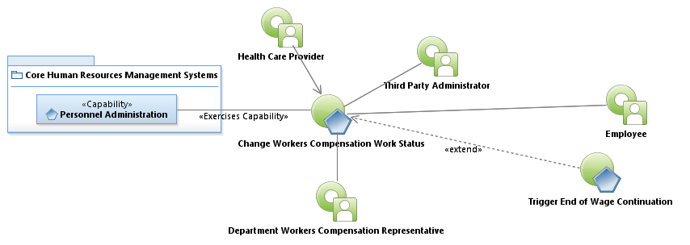
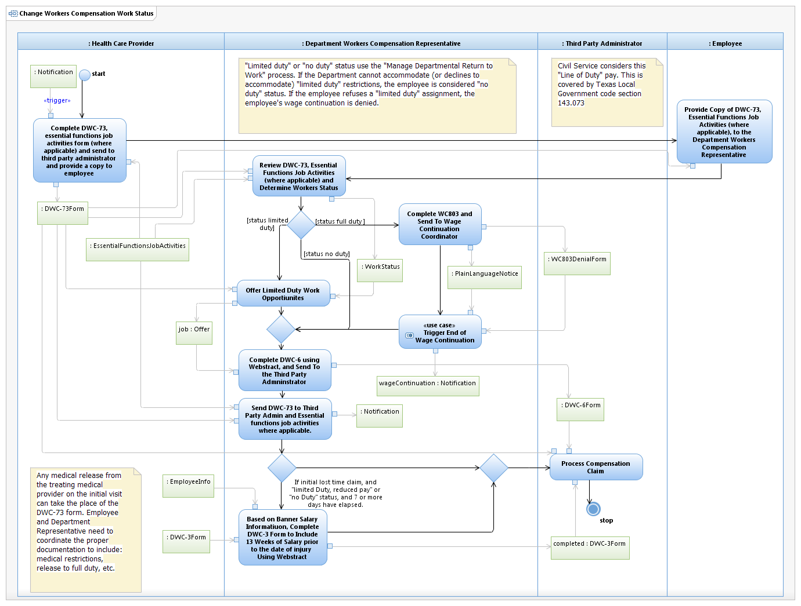

Use Case Model: Change Workers Compensation Work Status
Architect: Aaron Brown IT Enterprise Architect, Senior
Date Last Modified: 4/5/2013
User Review: Leslie Milvo, Cindy Steffen, Shelly Sheppard
Date: 4/5/2013
After a physician approves a work status change, a DWC-6 is completed by the Department Workers Compensation Representative (DWCR) and sent to the Third Party Administrator.
Follow link to Role Definitions

Use Case Model: Change Workers Compensation Work Status

Activity Model: Change Workers Compensation Work Status